本文介绍Hexo博客Next主题配置，博客配置效果：https://hiyong.gitee.io/。
配置站点信息
修改根目录下的 _config.yml 文件，找到 Site 区域，配置站点标题 title、副标题 subtitle 、关键字 keywords，语言等内容：1
2
3
4
5
6
7
8\# Site
title: HiYong
subtitle: XXXXXXXXXXXXXXXXXX
description: XXXXXXXXXXXXXXXXXXXXXXXXXXXXXXX
keywords: “技术分享，计算机网络，自动化测试，python，Java，机器学习”
author: HiYo
language: zh-CN
timezone:
修改主题
Hexo有各种炫酷的主题，可以去 https://hexo.io/themes/ 查看，选择自己喜欢的主题，个人比较喜欢简洁的，比如Next主题，下面介绍Next主题配置方法。
Next 主题GitHub地址：https://github.com/theme-next/hexo-theme-next
命令行进入到项目的根目录，执行如下命令，下载到themes/next 文件夹下：1
git clone https://github.com/theme-next/hexo-theme-next.git themes/next
或者直接下载
修改项目根目录下的_config.yml 文件，找到 theme 字段，修改为 next 即可，修改如下：1
theme: next
然后本地重新开启服务，访问刷新下页面，就可以看到 next 主题就切换成功了1
2
3hexo clean
hexo g
hexo serve
Next主题配置
主题设置可以参考官方文档：https://theme-next.org/docs/， 修改 themes/next/_config.yml 文件
样式
Next 主题提供了多种样式，选择Pisces 样式，其它样式1
2
3
4
5
6# Schemes
scheme: Pisces
# scheme: Muse
# scheme: Mist
# scheme: Pisces
# scheme: Gemini
直接刷新页面
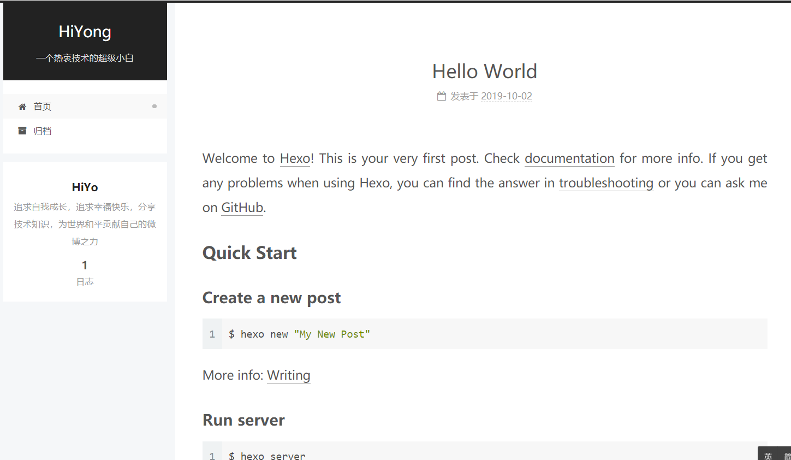
favicon
Favicon(favorites icon)，是与某个网站或网页相关联的图标，也被称为 website icon（网页图标）、page icon（页面图标）或 url icon（URL 图标）。
favicon 就是站点标签栏的小图标，默认使用的 Hexo 图标，可以自己定制小图标。可以使用https://realfavicongenerator.net 生成各种尺寸的图标，上传你制作好的图片，打包下载各种尺寸和适配不同设备的小图标。
图标下载下来之后把它放在 themes/next/source/images 目录下面。然后在配置文件里面找到 favicon 配置项，把一些相关路径配置进去即可，示例如下：1
2
3
4
5favicon:
small: /images/logo_favicon-16x16.png
medium: /images/logo_favicon-32x32.png
apple_touch_icon: /images/logo_apple-touch-icon.png
safari_pinned_tab: /images/logo.svg
配置完成之后刷新页面，整个页面的标签图标就被更新了。
avatar
avatar 为站点的头像，显示在作者信息旁边
- 将头像放置到 themes/next/source/images/avatar.png 路径
- 然后在主题 _config.yml 文件下编辑 avatar 的配置，修改为正确的路径。
1 | # Sidebar Avatar |
rounded：是否显示圆形
rotated：是否带有旋转效果
rss
简易信息聚合 (Really Simple Syndication或Richsite summary)是站点用来和其他站点之间共享内容的一种简易方式。
1. 安装插件hexo-generator-feed
在项目根目录下运行命令：npm install hexo-generator-feed --save
安装完成之后，站点会自动生成 RSS Feed 文件
2. 编辑项目配置文件
在项目根目录下的 _config.yml 文件中添加以下代码1
2
3
4
5
6
7
8
9
10feed:
type: atom
path: atom.xml
limit: 20
hub:
content:
content_limit: 140
content_limit_delim: " "
order_by: -date
icon: icon.png
将 url 修改为自己博客的域名1
url: https://hiyong.gitee.io
3. 修改 Next 主题配置文件
修改Next 主题配置文件_config.yml：1
2
3
4social:
GitHub: https://github.com/hiyongz/|| fa fa-github
# E-Mail: zhiyo2016@163.com/|| envelope
RSS: /atom.xml || fa fa-rss
代码块
修改Next 主题配置文件 _config.yml ，设置代码块样式，比如设置为类似 Mac 的样式：1
2
3
4
5
6
7
8
9codeblock:
highlight_theme: normal
# Add copy button on codeblock
copy_button:
enable: true
# Show text copy result.
show_result: true
# Available values: default | flat | mac
style: mac
回到页面顶部
修改Next 主题配置文件 _config.yml 的 back2top 字段：1
2
3
4
5
6back2top:
enable: true
# Back to top in sidebar.
sidebar: true
# Scroll percent label in b2t button.
scrollpercent: true
阅读进度条
在文章上侧显示阅读进度条，修改Next 主题配置文件 _config.yml：1
2
3
4
5
6reading_progress:
enable: true
# Available values: top | bottom
position: top
color: "#37c6c0"
height: 2px
GitHub 图标
右上角 GitHub 图标1
2
3
4github_banner:
enable: true
permalink: https://github.com/hiyongz
title: Follow me on GitHub
数学公式
渲染公式，配置如下：1
2
3
4
5
6
7
8
9
10
11
12
13math:
enable: true
per_page: true
mathjax:
enable: true
# See: https://mhchem.github.io/MathJax-mhchem/
mhchem: true
katex:
enable: false
# See: https://github.com/KaTeX/KaTeX/tree/master/contrib/copy-tex
copy_tex: false
mathjax 需要安装插件 hexo-renderer-kramed，也可以安装 hexo-renderer-pandoc，命令如下：1
2npm un hexo-renderer-marked --save
npm i hexo-renderer-kramed --save
添加自定义 Page
博客根目录运行：1
hexo new page name //name为新增Page名称
执行成功后，在 source 目录会生成了一个 name目录，编辑目录下index.md 文件：
1 | --- |
编辑主题配置文件 themes/next/_config.yml：
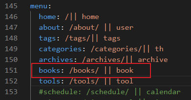
图标名book可以在 https://fontawesome.dashgame.com/ 中查找，home、tags、th等图标都是在这个网站上获取的。
编辑 themes/next/languages/zh-CN.yml 文件
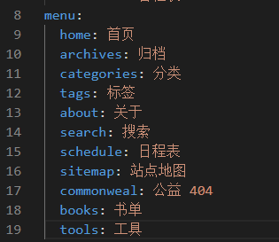
重新编译部署后，刷新页面，配置成功：
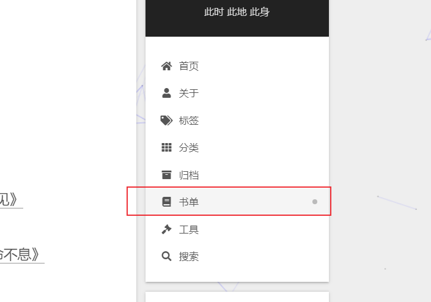
Valine 评论系统
- Valine 评论系统不需要登录便可以评论
- 支持 MarkDown 语法
- 无后端实现，快速高效
1. 注册 LeanCloud
https://leancloud.cn/dashboard/login.html#/signin
2. 创建应用
访问控制台，创建应用，选择开发版，创建好之后就生成了 App ID 和 App Key
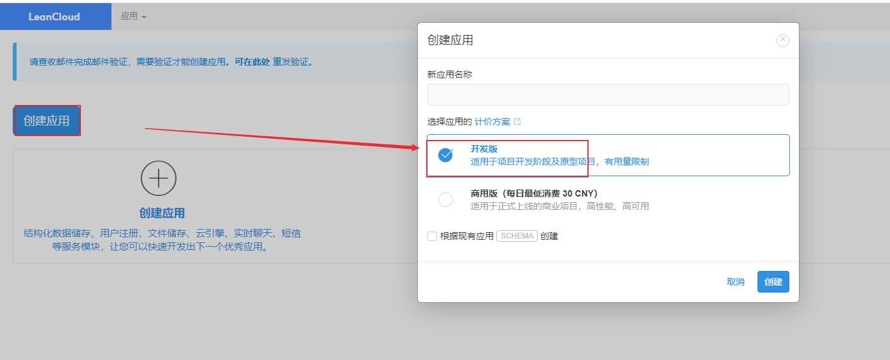
创建完成后，打开应用，点击存储，创建 Counter 和 Comment 两个 Classes：
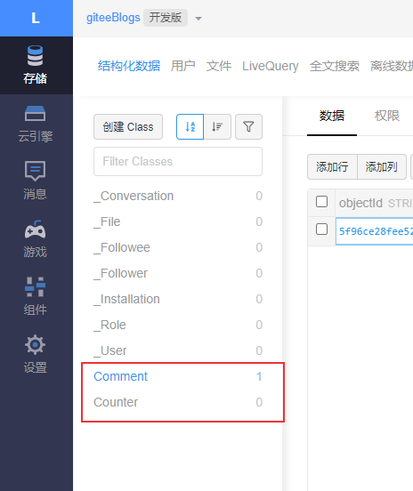
点击设置 -> 安全中心 -> 在服务开关，打开数据存储，在 Web 安全域名输入框填写博客的域名地址：
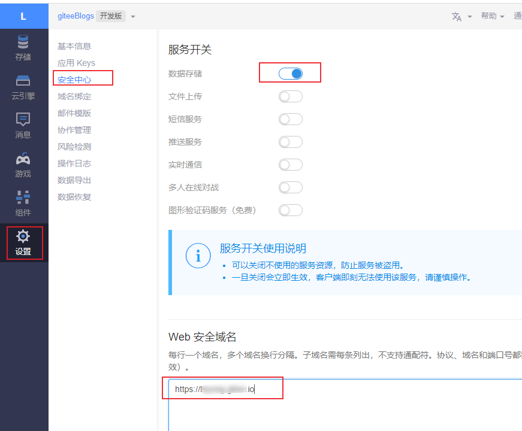
3. 设置 Next 主题配置文件
在主题的配置文件中，修改 valine 配置
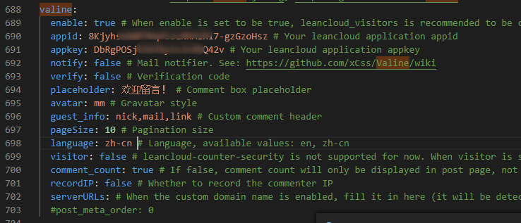
修改 valine.min.js 的 cdn 文件地址，到 https://www.jsdelivr.com/package/npm/valine 这个地址查看最新版本的Valine，
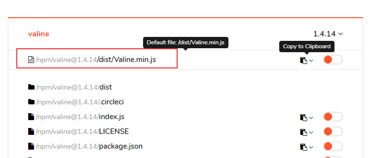
复制最新cdn地址，修改主题配置文件_config.yml 。1
valine: https://cdn.jsdelivr.net/npm/valine@1.4.14/dist/Valine.min.js
文章末尾添加公众号订阅
1. 准备公众号二维码图片
将二维码图片放到\source\uploads目录下
2. 修改主题文件
找到 themes\next\layout_macro\post.swig 文件，在 footer前面添加以下代码：1
2
3
4<div id="wechat_subscriber" style="display: block; padding: 10px 0; margin: 20px auto; width: 100%; text-align: center;">
<img id="wechat_subscriber_qcode" src="/uploads/wechat.jpg" style="width: 200px; max-width: 100%;">
<div>关注微信公众号，及时接收最新技术文章！</div>
</div>
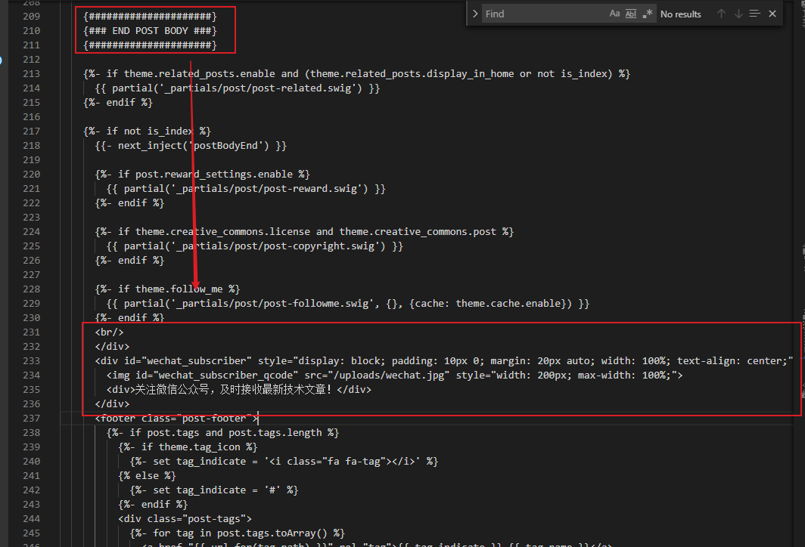
修改主题配置文件_config.yml ，添加如下代码：1
2
3
4
5# Wechat Subscriber
wechat_subscriber:
enable: true
qcode: /uploads/wechat.jpg
description: "欢迎您扫一扫上面的微信公众号，订阅我的博客！"
文章底部版权声明
1. my-copyright.swig
在目录 themes/next/layout/_macro/ 下添加 my-copyright.swig ，内容如下：1
2
3
4
5
6
7
8
9
10
11
12
13
14
15
16
17
18
19
20
21
22
23
24
25
26
27
28
29
30
31{% if page.copyright %}
<div class="my-post-copyright">
<script src="//cdn.bootcss.com/clipboard.js/1.5.10/clipboard.min.js"></script>
<!-- JS库 sweetalert 可修改路径 -->
<script type="text/javascript" src="http://jslibs.wuxubj.cn/sweetalert_mini/jquery-1.7.1.min.js"></script>
<script src="http://jslibs.wuxubj.cn/sweetalert_mini/sweetalert.min.js"></script>
<link rel="stylesheet" type="text/css" href="http://jslibs.wuxubj.cn/sweetalert_mini/sweetalert.mini.css">
<p><span>本文标题:</span>{{ page.title }}</a></p>
<p><span>文章作者:</span>{{ theme.author }}</a></p>
<p><span>文章链接:</span><a href="{{ url_for(page.path) }}" title="{{ page.title }}">{{ page.permalink }}</a>
<span class="copy-path" title="点击复制文章链接"><i class="fa fa-clipboard" data-clipboard-text="{{ page.permalink }}" aria-label="复制成功！"></i></span>
</p>
<p><span>许可协议:</span>本博客文章除特别声明外，均采用<a rel="license" href="https://creativecommons.org/licenses/by-nc-nd/4.0/" target="_blank" title="Attribution-NonCommercial-NoDerivatives 4.0 International (CC BY-NC-ND 4.0)">CC BY-NC-ND 4.0</a> 许可协议。转载请保留原文链接及作者。</p>
</div>
<script>
var clipboard = new Clipboard('.fa-clipboard');
clipboard.on('success', $(function(){
$(".fa-clipboard").click(function(){
swal({
title: "",
text: '复制成功',
html: false,
timer: 500,
showConfirmButton: false
});
});
}));
</script>
{% endif %}
2. my-post-copyright.styl
在目录 themes/next/source/css/_common/components/post/ 下添加 my-post-copyright.styl，内容如下:1
2
3
4
5
6
7
8
9
10
11
12
13
14
15
16
17
18
19
20
21
22
23
24
25
26
27
28
29
30
31
32
33
34
35
36
37
38
39
40
41
42
43
44
45
46.my-post-copyright {
//width: 85%;
//max-width: 45em;
//margin: 2.8em auto 0;
padding: 0.5em 1.0em;
border: 1px solid #d3d3d3;
border-left: 3px solid #ff1700;
font-size: 0.93rem;
line-height: 1.6em;
word-break: break-all;
background: rgba(255,255,255,0.4);
}
.my-post-copyright p{margin:0;}
.my-post-copyright span {
display: inline-block;
width: 5.2em;
color: #333333; // title color
font-weight: bold;
}
.my-post-copyright .raw {
margin-left: 1em;
width: 5em;
}
.my-post-copyright a {
color: #808080;
border-bottom:0;
}
.my-post-copyright a:hover {
color: #0593d3; // link color
text-decoration: underline;
}
.my-post-copyright:hover .fa-clipboard {
color: #000;
}
.my-post-copyright .post-url:hover {
font-weight: normal;
}
.my-post-copyright .copy-path {
margin-left: 1em;
width: 1em;
+mobile(){display:none;}
}
.my-post-copyright .copy-path:hover {
color: #808080;
cursor: pointer;
}
3. post.swig
修改 themes/next/layout/_macro/post.swig，在前面添加公众号的位置上面添加：1
2
3
4
5<div>
{% if not is_index %}
{% include 'my-copyright.swig' %}
{% endif %}
</div>
4. post.styl 文件
打开 themes/next/source/css/_common/components/post/post.styl 文件，在最后一行增加代码：1
@import 'my-post-copyright'
5. 修改主题配置文件
1 | post_copyright: |
字数统计、阅读时间统计
安装 hexo-wordcount 插件1
2npm i hexo-wordcount --save
npm install hexo-symbols-count-time --save
在主题配置文件 _config.yml 中打开 wordcount 统计功能1
2
3
4
5
6
7
8
9
10
11
12
13
14
15post_wordcount:
item_text: true
wordcount: true # 单篇 字数统计
min2read: true # 单篇 阅读时长
totalcount: false # 网站 字数统计
separated_meta: true
symbols_count_time:
separated_meta: true # 是否另起一行（true的话不和发表时间等同一行）
item_text_post: true # 首页文章统计数量前是否显示文字描述（本文字数、阅读时长）
item_text_total: false # 页面底部统计数量前是否显示文字描述（站点总字数、站点阅读时长）
awl: 4 # Average Word Length
wpm: 275 # Words Per Minute（每分钟阅读词数）
suffix: mins.
博客加密
安装hexo-blog-encrypt插件：
1 | $ npm install --save hexo-blog-encrypt |
github地址：https://github.com/D0n9X1n/hexo-blog-encrypt/blob/master/ReadMe.zh.md
hexo d 部署失败问题
hexo d 部署失败问题：
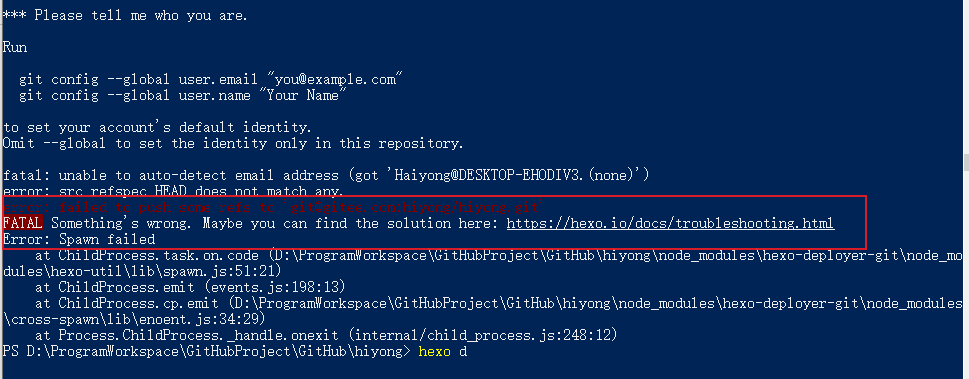
原因是没有配置git仓库同户名和邮箱地址，因为我电脑上配置了github和gitee，所以删除了全局的同户名和邮箱地址。
解决方案是添加本地用户名和邮箱：1
2git config user.name "github或者gitee用户名"
git config user.email "github或者gitee采用的邮箱"
注意前提是已经配置了SSH公钥，如果没有配置可参考同一台电脑配置Gitee、Github 的 Git SSH公钥
本文标题:Hexo个人博客主题配置
文章作者:hiyo
文章链接:https://hiyongz.github.io/posts/personal-blog-hexo-construction-guide2/
许可协议:本博客文章除特别声明外，均采用CC BY-NC-ND 4.0 许可协议。转载请保留原文链接及作者。